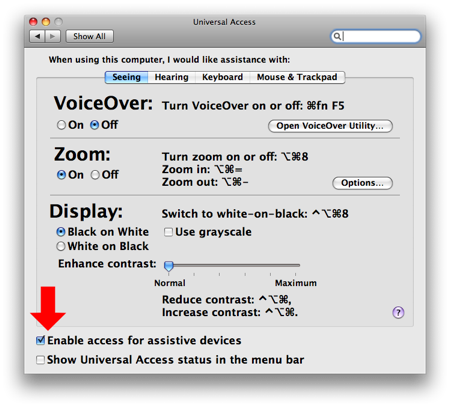

Graphic User Interface (GUI) Scripting
While creating scripting workflows, you may occasionally need to control applications that either do not have AppleScript support or are only partially scriptable. Mac OS X includes built-in support for the control of the computer's graphic user interface via AppleScript.
Graphic User interface (GUI) control is performed by writing scripts incorporating terms and commands from the Processes Suite in the System Events application's scripting dictionary. By addressing the System Events application, AppleScript scripts can select menu items, push buttons, enter text into text fields, and generally control the interfaces of many applications.
Activating GUI Scripting
The GUI Scripting architecture is based upon the Mac OS X Accessibility Frameworks that provide alternative methods of querying and controlling the interfaces of the OS and applications.
By default, the Accessibility Frameworks are disabled. They are enabled by clicking the checkbox labeled "Enable access for assistive devices" in the Universal Access System Preference pane:

Once the accessibility frameworks have been activated, AppleScript can be used to query and control the user interface of most applications. Scripted actions are performed by addressing the System Events application which has a special script suite for communicating with the GUI Scripting architecture.
 A sub-routine for checking to see if GUI Scripting support is enabled.
A sub-routine for checking to see if GUI Scripting support is enabled.
on GUIScripting_status()
-- check to see if assistive devices is enabled
tell application "System Events"
set UI_enabled to UI elements enabled
end tell
if UI_enabled is false then
tell application "System Preferences"
activate
set current pane to pane id "com.apple.preference.universalaccess"
display dialog "This script utilizes the built-in Graphic User Interface Scripting architecture of Mac OS x which is currently disabled." & return & return & "You can activate GUI Scripting by selecting the checkbox \"Enable access for assistive devices\" in the Universal Access preference pane." with icon 1 buttons {"Cancel"} default button 1
end tell
end if
end GUIScripting_status
GUI Scripting Examples
The following script examples demonstrate the use of UI scripting to access menu items and sub-menu items:
 Selecting a Menu Item - A sub-routine for selecting a menu item in an application:
Selecting a Menu Item - A sub-routine for selecting a menu item in an application:
on do_menu(app_name, menu_name, menu_item)
try
-- bring the target application to the front
tell application app_name
activate
end tell
tell application "System Events"
tell process app_name
tell menu bar 1
tell menu bar item menu_name
tell menu menu_name
click menu item menu_item
end tell
end tell
end tell
end tell
end tell
return true
on error error_message
return false
end try
end do_menu
 Selecting a Sub-menu Item - A sub-routine for selecting a sub-menu item in an application
Selecting a Sub-menu Item - A sub-routine for selecting a sub-menu item in an application
on do_submenu(app_name, menu_name, menu_item, submenu_item)
try
-- bring the target application to the front
tell application app_name
activate
end tell
tell application "System Events"
tell process app_name
tell menu bar 1
tell menu bar item menu_name
tell menu menu_name
tell menu item menu_item
tell menu menu_item
click menu item submenu_item
end tell
end tell
end tell
end tell
end tell
end tell
end tell
return true
on error error_message
return false
end try
end do_submenu
 A script for restarting the computer using a specified installation of Mac OS X:
A script for restarting the computer using a specified installation of Mac OS X:
property drive_identifier : "Mac OS X, 10.5.4 on Macintosh HD" -- must be exactly as it appears in pane
-- MAKE SURE SUPPORT FOR ASSISTIVE DEVICES IS ACTIVE
tell application "System Events"
if UI elements enabled is false then
tell application "System Preferences"
activate
set current pane to pane id "com.apple.preference.universalaccess"
display dialog "This script requires access for assistive evices be enabled." & return & return & "To continue, click the OK button and enter an administrative password in the forthcoming security dialog." with icon 1
end tell
set UI elements enabled to true
if UI elements enabled is false then return "user cancelled"
delay 1
end if
end tell
-- SWITCH TO THE DESIRED PANE
tell application "System Preferences"
activate
set current pane to pane id "com.apple.preference.startupdisk"
tell application "System Events"
tell process "System Preferences"
-- UNLOCK CHECKS
if (exists checkbox "Click the lock to make changes." of window 1) is true then
click checkbox "Click the lock to make changes." of window 1
-- wait for security login or dismissal
repeat until (count of every window) is not 0
delay 1
end repeat
if (exists checkbox "Click the lock to make changes." of window 1) then
set perform_changes to false
else
set perform_changes to true
end if
else
set perform_changes to true
end if
if perform_changes is true then
-- MAKE CHANGES
tell radio group 1 of scroll area 1 of group 1 of splitter group 1 of window 1
click button drive_identifier
end tell
delay 1
click button "Restart…" of window 1
delay 1
click button "Restart" of sheet 1 of window 1
end if
end tell
end tell
end tell